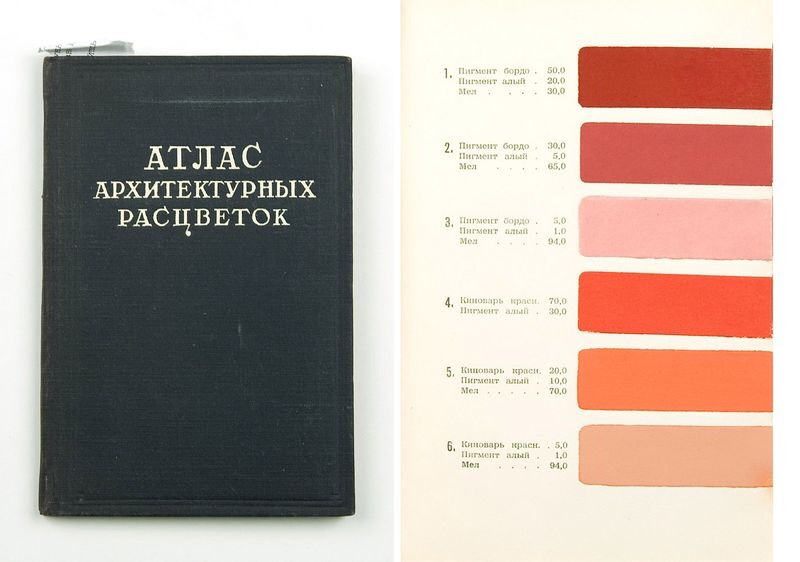
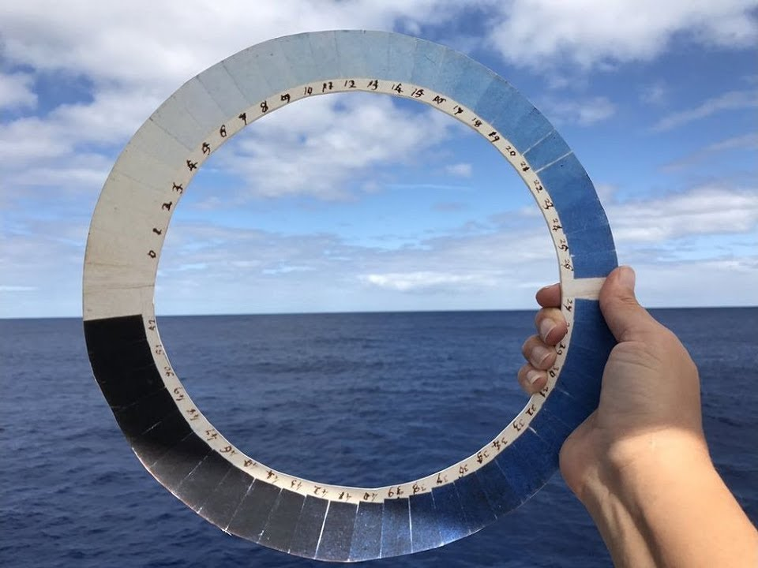
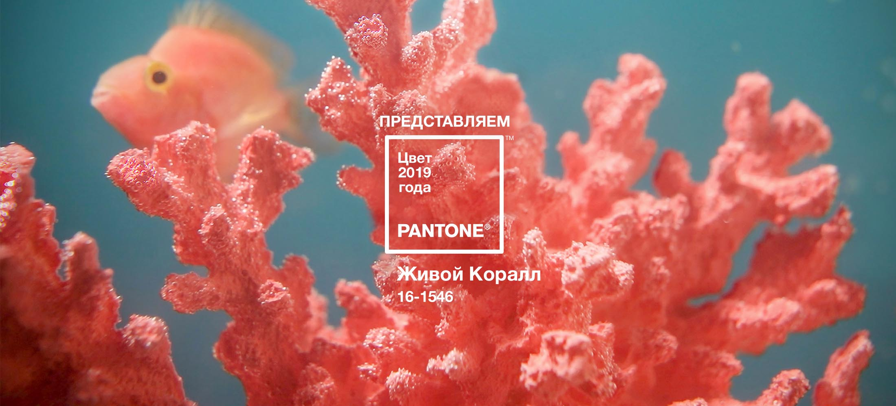

canva - генерация цветовой схемы по загруженной картинке
colormind - использует в алгоритмах подбора цвета Deep Learning
colorsafe - подбор цветов для читабельного текста (соотношение контрастности цвета текста и фона по WCAG Guidelines)

Атлас архитектурных цветов / Всесоюзная Академия архитектуры, Лаборатория отделочных работ. — Москва: Издательство Всесоюзной Академии архитектуры, 1937. — 103, 96 с., ил.

Цианометр (от лат. cianus — «синий») — прибор, предназначенный для измерения цвета ясного дневного неба и степени голубизны неба. Позже этот прибор использовался для определения глубины моря. Первый цианометр был сконструирован Орасом Бенедиктом де Соссюром ещё в конце XVIII века.

Pantone - "жизнеутверждающий коралловый оттенок с естественной мягкостью заряжает энергией и добавляет сил".